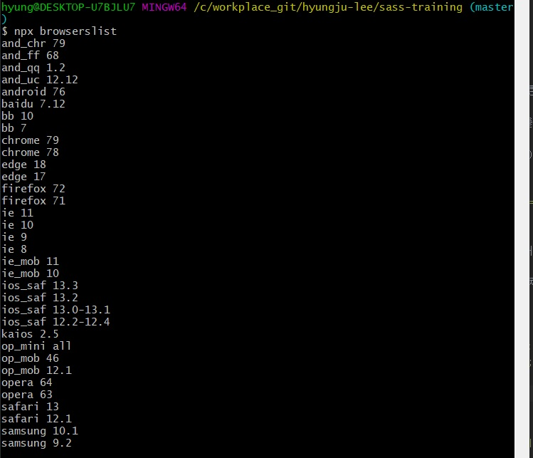
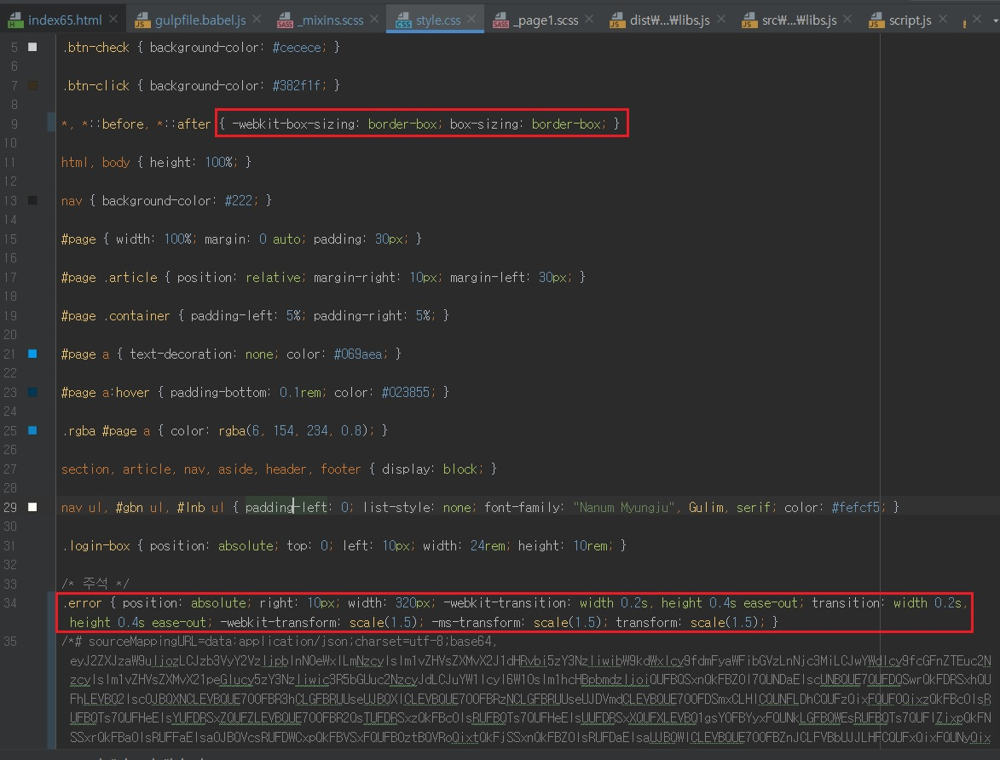

CSS3 속성마다 웹브라우저 벤더 프리픽스(Browser Vender Prefix)를 설정한 믹스인을 모두 만들어야 하나요?
- CSS3 속성마다 웹브라우저 벤더 프리픽스(Browser Vender Prefix)를 설정한 믹스인을 모두 만들어야 하나요?
-
실무에서는 자바스크립트를 그대로 사용하기보다는 인기 있는 라이브러리(Library) jQuery를 활용하는 경우가 많아졌습니다.
라이브러리를 사용하면 복잡하고 어려운 것도 손쉽게 구현할 수 있습니다.
Sass 또한 마찬가지로 손쉽게 가져다 쓸 수 있는 라이브러리가 있습니다.
인기있는 Sass 라이브러리로 Compass(http://compass-style.org)와
Bourbon(http://bourbon.io)이 있습니다.
위 방법은 별로인 거 같아서..(복잡).. 여기서는 책과는 다른 내용으로 밴더 프리픽스를 적용하겠습니다~!!!!!
먼저 gulp-postcss과 autoprefixer 모듈을 설치합니다.
npm i -D gulp-postcss
npm i -D autoprefixer
https://github.com/browserslist/browserslist#queries
위 사이트 들어가면 autoprefixer 관련 환경설정 하는 방법이 나와있습니다.
아래는 그것을 바탕으로 작성한 환경설정입니다.

npx browserslist 명령어를 입력하면 현재 환경설정되어있는 지원 브라우저를 확인할 수 있습니다.
위에 bb 이런것들이 무슨 브라우저인지는 https://github.com/browserslist/browserslist#queries
이 사이트 가시면 다 나와있습니다.
현재는 첫번째 스샷에서 보시는 것처럼 설정을 해놨기에 위 두번째 스샷의 브라우저들을 지원하고 그걸 토대로 밴드프리픽스가 생성되는 걸 알 수 있습니다.
autoprefixer가 자동으로 벤더 프리픽스를 붙여줄 때 위와 같은 브라우저들을 고려해서 붙여줍니다.

위의 브라우저들을 토대로 밴드프리픽스가 입혀진 모습입니다.